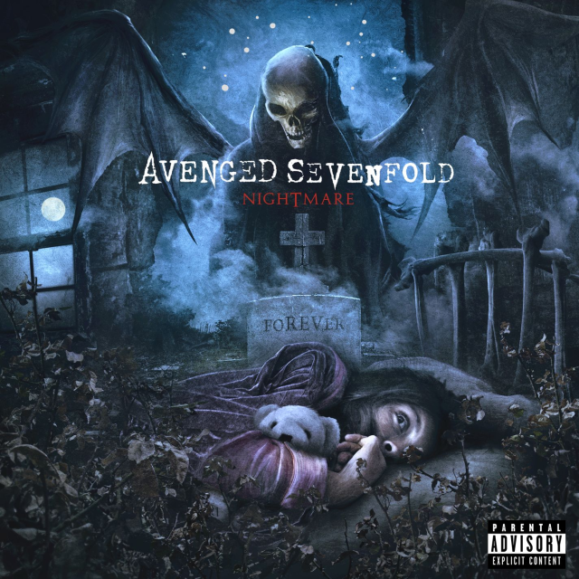
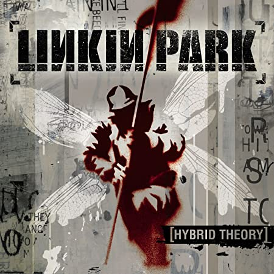
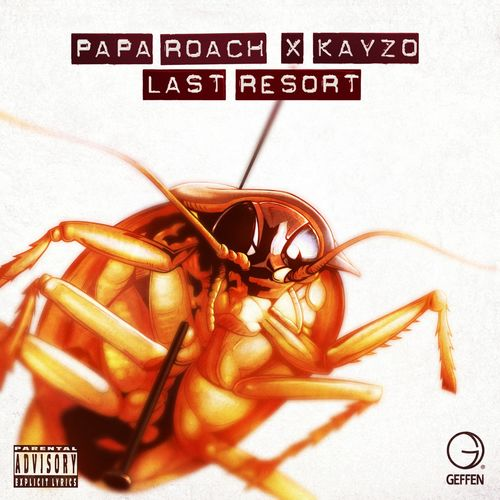

Múscas para estudar
Abaixo voce vera que estão algumas de minhas melhores indicações de musicas para voce escutar enquanto estuda.
Avenged Sevenfold - Nightmare

Nightmare (now your nightmare comes to life)
Dragged ya down below
Down to the devil's show
To be his guest forever (peace of mind is less than never)
Hate to twist your mind
But God ain't on your side
An old acquaintance severed (burn the world, your last endeavor)
Flesh is burning, you can smell it in the air
'Cause men like you have such an easy soul to steal (steal)
So stand in line while they ink numbers in your head
You're now a slave until the end of time here
(Nothing stops the madness turning, haunting, yearning, pull the trigger)
You should have known the price of evil
And it hurts to know that you belong here, yeah
Oh, it's your fucking nightmare
(While your nightmare comes to life)
Can't wake up in sweat
'Cause it ain't over yet
Still dancing with your demons (victim of your own creation)
Beyond the will to fight
Where all that's wrong is right
Where hate don't need a reason (loathing self-assassination)
You've been lied to just to rape you of your sight
And now they have the nerve to tell you how to feel (feel)
So sedated as they medicate your brainv
And while you slowly go insane, they tell you
(Given with the best intentions, help you with your complications)
You should have known the price of evil
And it hurts to know that you belong here, yeah
No one to call, everybody to fear
Your tragic fate is looking so clear, yeah
Oh, it's your fucking nightmare
Fight (fight) not to fail (fail), not to fall (fall)
Or you'll end up like the others
Die (die), die again (die), drenched in sin (sin)
With no respect for another
Down (down), feel the fire (fire), feel the hate (hate)
Your pain is what we desire
Lost (lost), hit the wall (wall), watch you crawl (crawl)
Such a replaceable liar
And I know you hear their voices (calling from above)
And I know they may seem real (these signals of love)
But our life's made up of choices (some without appeal)
They took for granted your soul and it's ours now to steal
(As your nightmare comes to life)
You should have known the price of evil
And it hurts to know that you belong here, yeah
No one to call, everybody to fear
Your tragic fate is looking so clear, yeah
Oh, it's your fucking nightmare
Nirvana - Smells Like Teen Spirit

Load up on guns, bring your friends
It's fun to lose and to pretend
She's over-bored and self-assured
Oh, no, I know a dirty word
Hello, hello, hello, how low
Hello, hello, hello, how low
Hello, hello, hello, how low
Hello, hello, hello
With the lights out
It's less dangerous
Here we are now, entertain us
I feel stupid and contagious
Here we are now, entertain us
A mulatto, an albino
A mosquito, my libido
Yeah, hey, yay
I'm worse at what I do best
And for this gift I feel blessed
Our little group has always been
And always will until the end
Hello, hello, hello, how low
Hello, hello, hello, how low
Hello, hello, hello, how low
Hello, hello, hello
With the lights out
It's less dangerous
Here we are now, entertain us
I feel stupid and contagious
Here we are now, entertain us
A mulatto, an albino
A mosquito, my libido
Yeah, hey, yay
And I forget just why I taste
Oh, yeah, I guess it makes me smile
I found it hard, it's hard to find
Well, whatever, nevermind
Hello, hello, hello, how low
Hello, hello, hello, how low
Hello, hello, hello, how low
Hello, hello, hello
With the lights out
It's less dangerous
Here we are now, entertain us
I feel stupid and contagious
Here we are now, entertain us
A mulatto, an albino
A mosquito, my libido
A denial, a denial, a denial
A denial, a denial, a denial
A denial, a denial, a denial
System Of A Down - Chop Suey!

Wake up (wake up)
Grab a brush and put a little makeup
Hide your scars to fade away the shakeup (hide the scars to fade away the shakeup)
Why'd you leave the keys upon the table?
Here you go, creating another fable
(You wanted to) grab a brush and put a little makeup
(You wanted to) hide the scars to fade away the shakeup
(You wanted to) why'd you leave the keys upon the table?
(You wanted to)
I don't think you trust
In my self-righteous suicide
I cry
When angels deserve to die
Wake up (wake up)
Grab a brush and put a little makeup (a little bit)
Hide the scars to fade away the (hide the scars to fade away the shakeup)
Why'd you leave the keys upon the table?
Here you go, creating another fable
(You wanted to) grab a brush and put a little makeup
(You wanted to) hide the scars to fade away the shakeup
(You wanted to) why'd you leave the keys upon the table?
(You wanted to)
I don't think you trust
In my self-righteous suicide
I cry
When angels deserve to die
In my self-righteous suicide
I cry
When angels deserve to die
Father (Father)
Father (Father)
Father (Father)
Father (Father)
Father, into Your hands I commend my spirit
Father, into Your hands
Why have You forsaken me?
In Your eyes, forsaken me
In Your thoughts, forsaken me
In Your heart, forsaken me, oh
Trust in my self-righteous suicide
I cry
When angels deserve to die
In my self-righteous suicide
I cry
When angels deserve to die
Linkin Park - Crawling
hybrid
Crawling in my skin
These wounds, they will not heal
Fear is how I fall
Confusing what is real
There's something inside me that pulls beneath the surface
Consuming, confusing
This lack of self control I fear is neverending
Controlling, I can't seem
To find myself again
My walls are closing in
Without a sense of confidence
I'm convinced that there's just too much pressure to take
I've felt this way before, so insecure
Crawling in my skin
These wounds, they will not heal
Fear is how I fall
Confusing what is real
Discomfort endlessly has pulled itself upon me
Distracting, reacting
Against my will I stand beside my own reflection
It's haunting, how I can't seem
To find myself again
My walls are closing in
Without a sense of confidence
I'm convinced that there's just too much pressure to take
I've felt this way before, so insecure
Crawling in my skin
These wounds, they will not heal
Fear is how I fall
Confusing what is real
Crawling in my skin
These wounds, they will not heal
Fear is how I fall
Confusing, confusing what is real
(There's something inside me that pulls beneath the surface
Consuming)
Confusing what is real
(This lack of self control I fear is neverending
Controlling)
Confusing what is real
Papa Roach - Last Resort

Cut my life into pieces
This is my last resort
Suffocation! No breathing!
Don't give a fuck if I cut my arm bleeding
This is my last resort!
Cut my life into pieces
I've reached my last resort
Suffocation! No breathing!
Don't give a fuck, if I cut my arm bleeding
Do you even care If I died bleeding?
Would it be wrong?
Would it be right?
If I took my life tonight
Chances are that I might
Mutilation out of sight
And I'm contemplating suicide
'Cause I'm losing my sight, losing my mind
Wish somebody would tell me I'm fine
Losing my sight, losing my mind
Wish somebody would tell me I'm fine
I never realized I was spread too thin
Till it was too late and I was empty within
Hungry! Feeding on chaos and living in sin
Downward spiral
Where do I begin?
It all started when I lost my mother
No love for myself and no love for another
Searching to find a love upon a higher level
Finding nothing but questions and devils
'Cause I'm losing my sight, losing my mind
Wish somebody would tell me I'm fine
Losing my sight, losing my mind
Wish somebody would tell me I'm fine
Nothing's alright, nothing is fine
I'm running and I'm crying
I'm crying! I'm crying!
I'm crying! I'm crying!
I can't go on living this way!
Cut my life into pieces
This is my last resort
Suffocation! No breathing!
Don't give a fuck if I cut my arm bleeding
Would it be wrong?
Would it be right?
If I took my life tonight
Chances are that I might
Mutilation out of sight
And I'm contemplating suicide
'Cause I'm losing my sight, losing my mind
Wish somebody would tell me I'm fine
Losing my sight, losing my mind
Wish somebody would tell me I'm fine
Nothing's alright, nothing is fine
I'm running and I'm crying
I can't go are living this way!
Can't go on
Living this way
Nothing's all right!
Nirvana - Heart-Shaped Box

She eyes me like a pisces when I am weak
I've been locked inside your heart-shaped box for weeks
I've been drawn into your magnet tar pit trap
I wish I could eat your cancer when you turn black
Hey, wait! I've got a new complaint!
Forever in debt to your priceless advice
Hey, wait! I've got a new complaint!
Forever in debt to your priceless advice
Hey, wait! I've got a new complaint!
Forever in debt to your priceless advice
Your advice
Meat-eating orchids forgive no one just yet
Cut myself on angel hair and baby's breath
Broken hymen of your highness, I'm left back
Throw down your umbilical noose
So I can climb right back
Hey, wait! I've got a new complaint!
Forever in debt to your priceless advice
Hey, wait! I've got a new complaint!
Forever in debt to your priceless advice
Hey, wait! I've got a new complaint!
Forever in debt to your priceless advice
Your advice
She eyes me like a pisces when I am weak
I've been locked inside your heart-shaped box for weeks
I've been drawn into your magnet tar pit trap
I wish I could eat your cancer when you turn black
Hey, wait! I've got a new complaint!
Forever in debt to your priceless advice
Hey, wait! I've got a new complaint!
Forever in debt to your priceless advice
Hey, wait! I've got a new complaint!
Forever in debt to your priceless advice
Your advice
Your advice
Your advice